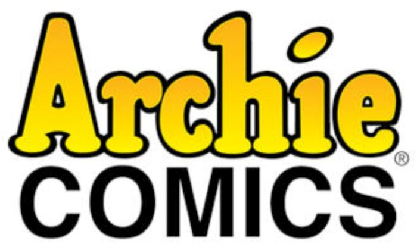

Archie Comic Publications, Inc., is an American comic book publisher headquartered in Pelham, New York. The company's many titles feature the fictional teenagers Archie Andrews, Jughead Jones, Betty Cooper, Veronica Lodge, Reggie Mantle, Sabrina Spellman, and Josie and the Pussycats.
The company began in 1939 as MLJ Comics, which primarily published superhero comics. The initial Archie characters were created in 1941 by publisher John L. Goldwater and artist Bob Montana, in collaboration with writer Vic Bloom. They first appeared in Pep Comics #22 (cover-dated Dec. 1941). With the creation of Archie, publisher John Goldwater hoped to appeal to fans of the Andy Hardy movies starring Mickey Rooney.
Archie Comics was also the title of the company's longest-running publication, the first issue appearing with a cover date of Winter 1942. Starting with issue #70, the title was shortened to simply Archie. The flagship series was relaunched from issue #1 in July 2015 with a new look and design suited for a new generation of readers.Archie Comics characters and concepts have also appeared in numerous films, television programs, cartoons, and video games.
Archie #1–699 1942 – 2019
Archie's Christmas Stocking #1–7 1993–1999
Archie's Double Digest Quarterly Magazine #1–9 Jan. 1982 – Jan. 1984
Archie's Explorers of the Unknown! #1–6 June 1990 – April 1991
Archie's Funhouse Double Digest #1-28 Mar 2014 – Sept 2017
Archie's Girls Betty and Veronica #1–347 1950 – April 1987
Archie's Holiday Fun Digest #1–12 Feb. 1997 – Dec. 2007
Archie's Jokebook Magazine #15–288 1953 – Nov. 1982
Archie Jumbo Comics 75th Anniversary #1–12 Sept. 2016 – Jul. 2017
Archie Jumbo Comics Digest May 1984 – present
Archie's Madhouse #1–66 Sept. 1959 – Feb. 1969
Archie Meets Ramones #1 October 2016
Archie Milestones Digest #1-3 April-June 2019
Archie's Mysteries #26–34 Feb. 2003 – June 2004
Archie's Pal Jughead #1–214 1949 – 2012
Archie's TV Laugh-Out #1–106 Dec. 1969 – Feb. 1986
Archie's Weird Mysteries #1–25 Feb. 2000 – Dec. 2002
Archie Digest #1–267 Aug. 1973 – Sept. 2010
Archie All Canadian Digest #1 Aug. 1996
Archie Americana Series June 1995 – April 2011
Archie Annual Digest #27–69 1975–1998
Archie & Friends #1–159 1992 – 2019
Archie & Friends Double Digest #1–33 Feb. 2011 – Jan 2014
Archie and Me #1–161 Oct. 1964 – Feb. 1987
Archie and Me Jumbo Comics Digest #1–Present 2017 – 2019
Archie... Archie Andrews, Where Are You? Digest #1–114 Feb. 1977 – May 1998
Archie at Riverdale High #1–113 Aug. 1972 – Feb. 1987
Archie Giant Series #1– 632 Dec. 1954 – 1992
Archie Meets the Punisher #1 August 1994
Archie Meets Batman of 1966 #1-6 August 2018-2019
Archie 1941 #1-5 October 2018-February 2019
Archie 3000! #1–16 May 1989 – July 1991
Archie vs. Predator #1–4 April – July 2015
Archie vs. Predator II #1–5 July 2019 – January 2020
Archie vs. Sharknado #1 July 2015
Archie and Katy Keene #1 January 2020
Archie Meets Glee #1–4 2013
B & V Friends Jumbo Comics Digest #209–current Jan. 2011 – present
Betty and Me #1–200 Aug. 1965 – Aug. 1992
Betty And Veronica: Friends forever #1-current May 2018- present
Betty and Veronica Summer Fun #1–6 1994–1999
Betty's Diary #1–40 April 1986 – April 1990
Betty #1–195 Sept. 1992 – Jan. 2012
Betty & Veronica #1–278 1987 – 2019
Betty and Veronica Digest Magazine #1–208 Nov. 1980 – Oct. 2010
Betty and Veronica Jumbo Comics Digest 1987 – 2019
Betty and Veronica Spectacular #1–90 Oct. 1992 – July 2009
Betty and Veronica Vixens #1-10 2017- 2018
Blossoms 666 #1–5 J2019
The Carneys #1 Summer 1994
Cheryl Blossom #1–37 April 1997 – Sept. 2001
Cosmo the Merry Martian #1–6 1958 – 2018
Chilling Adventures in Sorcery 1972
Chilling Adventures of Sabrina #1-8 October 2014-May 2015
Everything's Archie #1–157 May 1969 – Sept. 1991
Ginger #1–10 1951 – Summer 1954
Harley & Ivy Meet Betty & Veronica #1-6 2017 - 2018
Jackpot Comics #1–9 Spring 1941 – Spring 1943
Jolly Jingles #10–16 1943 – 1945
Josie and the Pussycats #1–106 Feb. 1963 – Oct. 1982
Jughead #127–397 1965 – 2016
Jughead's Diner #1–7 April 1990 – April 1991
Jughead's Folly #1 1957
Jughead's Jokes #1–78 Aug. 1967 – Sept. 1982
Jughead's Pal Hot Dog #1–5 Jan. – Oct. 1990
Jughead's Time Police #1–6 July 1990 – May 1991
The Jughead Jones Digest Magazine #1–100 June 1977 – May 1996
Jughead's Double Digest #1–200 Oct. 1989 – Apr. 2014
Jughead and Archie Double Digest #1–27 June 2014 – Sept. 2017
Jughead and Friends Digest #1–38 June 2005 – July 2010
Jughead with Archie Digest #1–200 July 1974 – May 2005
Jughead: The Hunger #1–13 October 2017 – 2018
Katy Keene #7–33 Dec. 1984 – Jan. 1990
Kevin Keller #1–15 Feb. 2012 – Nov. 2014
Knuckles the Echidna (comics) #1–32 Apr. 1997 – Feb. 2000
Li'l Jinx #11–16 Nov. 1956 – Sept. 1957
Little Archie #1–180 1956 – Feb. 1983
Little Archie in Animal Land #1-19 1957-1958
Little Archie Mystery #1–2 Aug. – Oct. 1963
Laugh Comics #20–400 Fall 1946 – 1991
Laugh Comix #46–48 1944 – 1945
Laugh Comics Digest #1–200 Aug. 1974 – April 2005
Life with Archie #1–286 Sept. 1958 – July 1991
Life with Archie: The Married Life #1–37 July 2010 – Sept 2014
Mad House Ma-ad #67–72 June 1968 – Jan. 1969
Mad House Glads #73–94 May 1972 – Aug. 1974
ManTech Robot Warriors #1–4 Sept. 1984 – May. 1985
Mega Man (Archie Comics) #1–55 2011 – 2015
Mighty Mutanimals #1–9 May 1991 – 1993
The New Archies Digest Magazine #1–22 Oct. 1987 – May 1990
Pep Comics #1–411 Jan. 1940 – March 1987
Reggie and Me #1–126 1950 – 1980
Reggie's (Wise Guy) Jokes #1–55 Aug. 1968 – Sept. 1980
Reggie's Revenge #1–3 Spring 1994 – Spring 1995
Riverdale #1-5 2017-2018
Riverdale Season 3 #1-present 2019-present
Riverdale Digest #1-7 Jan. 2017 – ?
Riverdale High #1–6 Aug. 1990 – June 1991
Sabrina the Teenage Witch #1–77 1971 – 2019
Sonic Boom #1–11 Oct. 2014 – Sep. 2015
Sonic the Hedgehog #1–290 1992 – 2016
Sonic Universe #1–94 Feb. 2009 – Jan. 2017
Sonic X #1–40 Sep. 2005 – Jan. 2009
Suzie Comics #41–100 Spring 1945 – Aug. 1954
That Wilkin Boy #1–52 Jan. 1969 – Oct. 1982
Tales from Riverdale Digest #1–39 July 2005 – Aug. 2010
Teenage Mutant Ninja Turtles Adventures #1–72 Aug. 1988 – Oct. 1995
Veronica #1–210 April 1989 – Dec. 2011
Wilbur Comics #1–90 Summer 1944 – Oct. 1965
World of Archie #1–22 Aug. 1992 – March 1997
World of Archie Jumbo Comics Digest #1–current Oct. 2010 – present
Your Pal Archie #1-3 2017